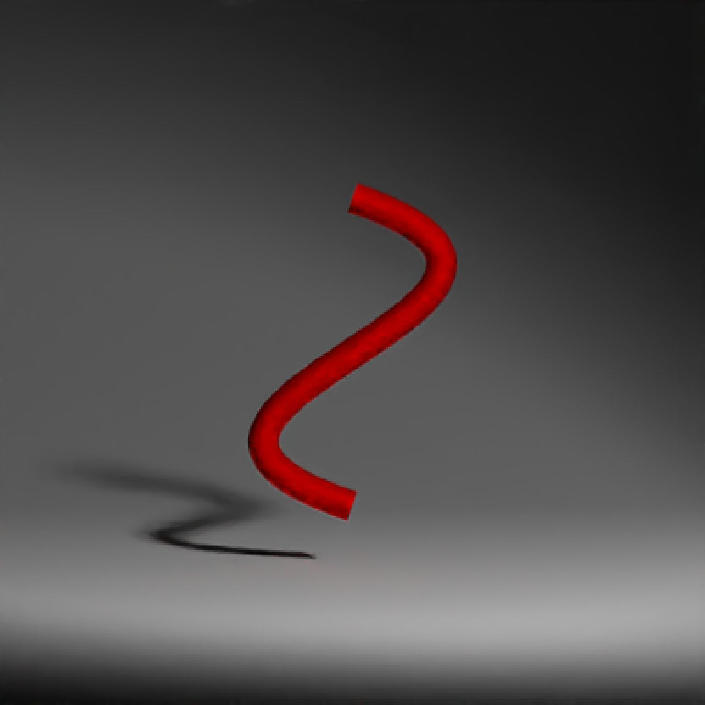
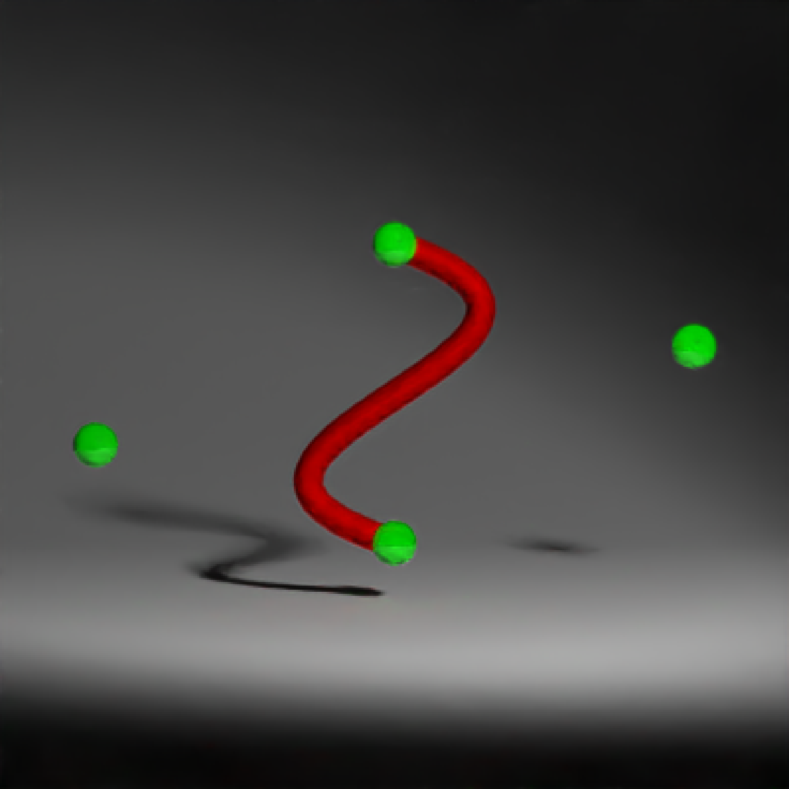
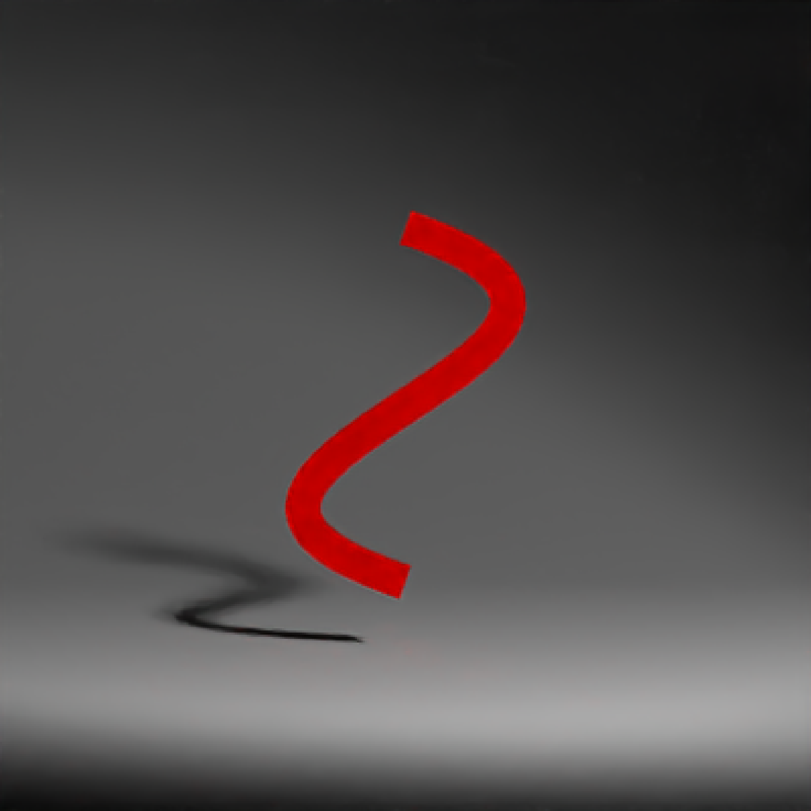
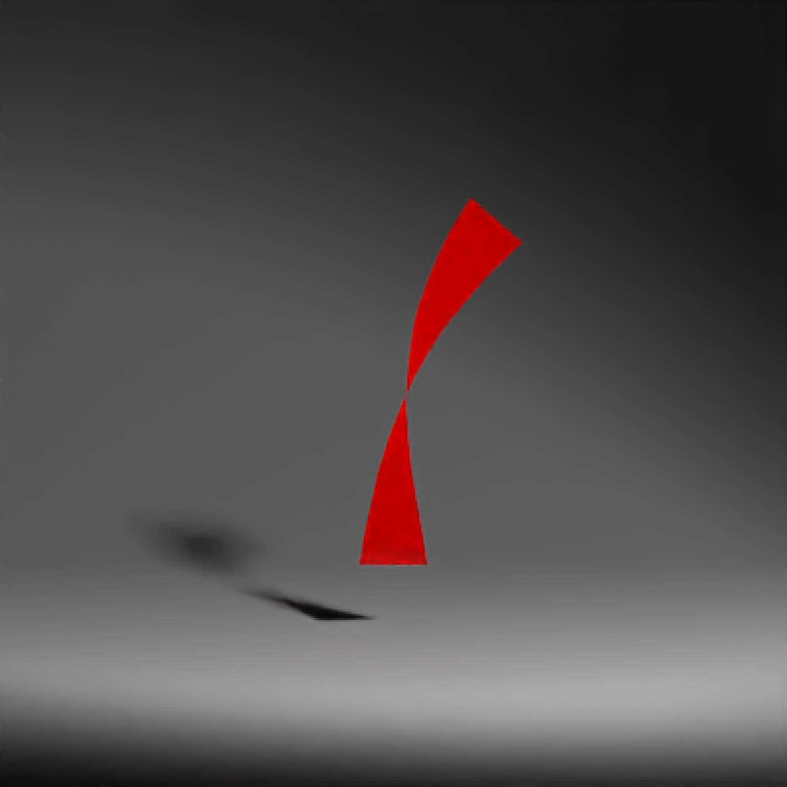
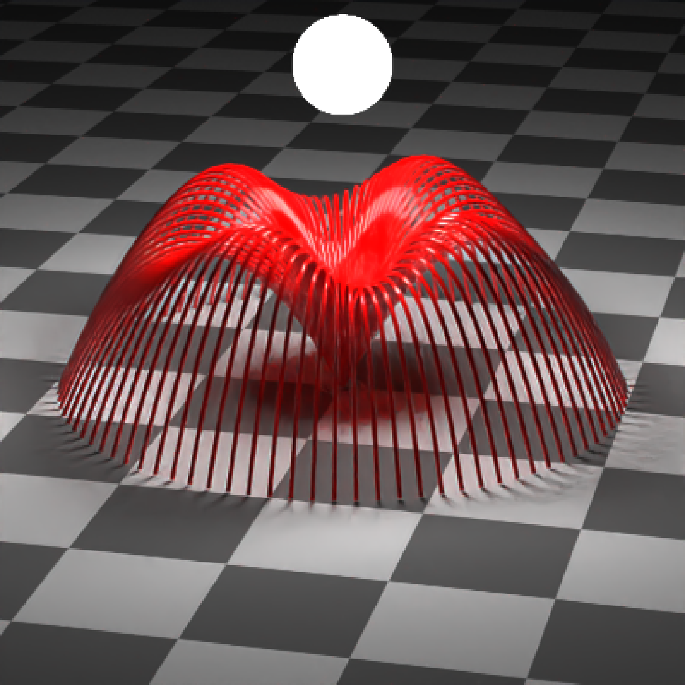

Bezier curve, defined by 4 control points.
bezier_curve( p1 = c(0, 0, 0), p2 = c(-1, 0.33, 0), p3 = c(1, 0.66, 0), p4 = c(0, 1, 0), x = 0, y = 0, z = 0, width = 0.1, width_end = NA, u_min = 0, u_max = 1, type = "cylinder", normal = c(0, 0, -1), normal_end = NA, material = diffuse(), angle = c(0, 0, 0), order_rotation = c(1, 2, 3), velocity = c(0, 0, 0), flipped = FALSE, scale = c(1, 1, 1) )
| p1 | Default `c(0,0,0)`. First control point. Can also be a list of 4 length-3 numeric vectors or 4x3 matrix/data.frame specifying the x/y/z control points. |
|---|---|
| p2 | Default `c(-1,0.33,0)`. Second control point. |
| p3 | Default `c(1,0.66,0)`. Third control point. |
| p4 | Default `c(0,1,0)`. Fourth control point. |
| x | Default `0`. x-coordinate offset for the curve. |
| y | Default `0`. y-coordinate offset for the curve. |
| z | Default `0`. z-coordinate offset for the curve. |
| width | Default `0.1`. Curve width. |
| width_end | Default `NA`. Width at end of path. Same as `width`, unless specified. |
| u_min | Default `0`. Minimum parametric coordinate for the curve. |
| u_max | Default `1`. Maximum parametric coordinate for the curve. |
| type | Default `cylinder`. Other options are `flat` and `ribbon`. |
| normal | Default `c(0,0,-1)`. Orientation surface normal for the start of ribbon curves. |
| normal_end | Default `NA`. Orientation surface normal for the start of ribbon curves. If not specified, same as `normal`. |
| material | Default |
| angle | Default `c(0, 0, 0)`. Angle of rotation around the x, y, and z axes, applied in the order specified in `order_rotation`. |
| order_rotation | Default `c(1, 2, 3)`. The order to apply the rotations, referring to "x", "y", and "z". |
| velocity | Default `c(0, 0, 0)`. Velocity of the cube. |
| flipped | Default `FALSE`. Whether to flip the normals. |
| scale | Default `c(1, 1, 1)`. Scale transformation in the x, y, and z directions. If this is a single value, number, the object will be scaled uniformly. Note: emissive objects may not currently function correctly when scaled. |
Single row of a tibble describing the cube in the scene.
#Generate the default curve: # \donttest{ generate_studio(depth=-0.1) %>% add_object(bezier_curve(material=diffuse(color="red"))) %>% add_object(sphere(y=3,z=5,x=2,radius=0.3, material=light(intensity=200, spotlight_focus = c(0,0.5,0)))) %>% render_scene(clamp_value = 10, lookat = c(0,0.5,0), fov=13, samples=500)#Change the control points to change the direction of the curve. Here, we place spheres #at the control point locations. generate_studio(depth=-0.1) %>% add_object(bezier_curve(material=diffuse(color="red"))) %>% add_object(sphere(radius=0.075,material=glossy(color="green"))) %>% add_object(sphere(radius=0.075,x=-1,y=0.33,material=glossy(color="green"))) %>% add_object(sphere(radius=0.075,x=1,y=0.66,material=glossy(color="green"))) %>% add_object(sphere(radius=0.075,y=1,material=glossy(color="green"))) %>% add_object(sphere(y=3,z=5,x=2,radius=0.3, material=light(intensity=200, spotlight_focus = c(0,0.5,0)))) %>% render_scene(clamp_value = 10, lookat = c(0,0.5,0), fov=15, samples=500)#We can make the curve flat (always facing the camera) by setting the type to `flat` generate_studio(depth=-0.1) %>% add_object(bezier_curve(type="flat", material=glossy(color="red"))) %>% add_object(sphere(y=3,z=5,x=2,radius=0.3, material=light(intensity=200, spotlight_focus = c(0,0.5,0)))) %>% render_scene(clamp_value = 10, lookat = c(0,0.5,0), fov=13, samples=500)#We can also plot a ribbon, which is further specified by a start and end orientation with #two surface normals. generate_studio(depth=-0.1) %>% add_object(bezier_curve(type="ribbon", width=0.2, p1 = c(0,0,0), p2 = c(0,0.33,0), p3 = c(0,0.66,0), p4 = c(0.3,1,0), normal_end = c(0,0,1), material=glossy(color="red"))) %>% add_object(sphere(y=3,z=5,x=2,radius=0.3, material=light(intensity=200, spotlight_focus = c(0,0.5,0)))) %>% render_scene(clamp_value = 10, lookat = c(0,0.5,0), fov=13, samples=500)#Create a single curve and copy and rotate it around the y-axis to create a wavy fountain effect: scene_curves = list() for(i in 1:90) { scene_curves[[i]] = bezier_curve(p1 = c(0,0,0),p2 = c(0,5-sinpi(i*16/180),2), p3 = c(0,5-0.5 * sinpi(i*16/180),4),p4 = c(0,0,6), angle=c(0,i*4,0), type="cylinder", width = 0.1, width_end =0.1,material=glossy(color="red")) } all_curves = do.call(rbind, scene_curves) generate_ground(depth=0,material=diffuse(checkercolor="grey20")) %>% add_object(all_curves) %>% add_object(sphere(y=7,z=0,x=0,material=light(intensity=100))) %>% render_scene(lookfrom = c(12,20,50),samples=100, lookat=c(0,1,0), fov=15, clamp_value = 10)# }